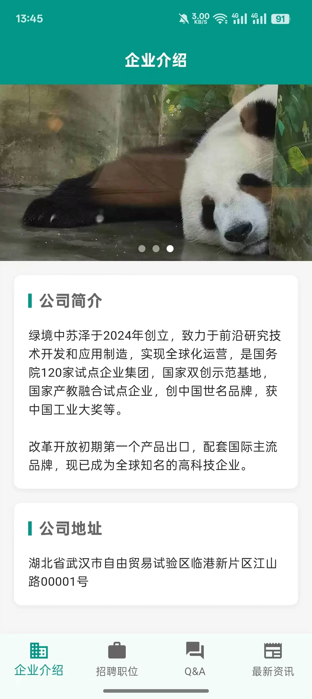
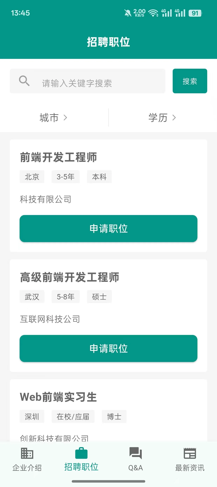
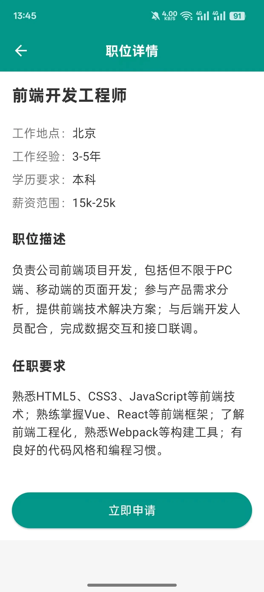
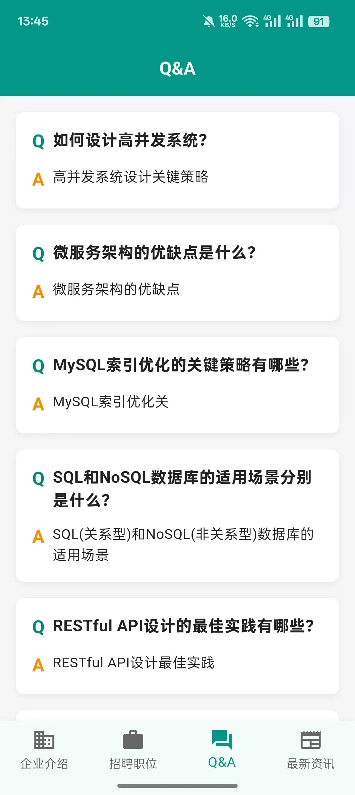

招聘 App
项目概述
这是一个使用Flutter开发的跨平台招聘应用，支持iOS和Android系统。应用采用现代化的UI设计，提供流畅的用户体验，帮助求职者快速找到心仪的工作机会。
项目亮点
- 跨平台支持，一套代码同时适配iOS和Android
- 流畅的动画效果和现代化的UI设计
- 高效的职位搜索和筛选功能
- 实时消息通知和在线沟通
- 完善的简历管理和投递系统
核心功能
- 职位搜索
- 关键词搜索
- 多条件筛选
- 职位收藏
- 搜索历史
- 职位详情
- 职位描述
- 公司信息
- 工作地点
- 薪资待遇
- 简历管理
- 在线简历编辑
- 简历投递记录
- 面试通知
- 投递状态跟踪
- 消息中心
- 系统通知
- 面试邀请
- HR消息
- 投递反馈
技术栈
- 开发框架：Flutter
- 编程语言：Dart
- 状态管理：GetX
- UI组件：GetWidget、Bruno
- 网络请求：http
- 本地存储：SharedPreferences
项目展示

首页

首页 - 职位列表

职位详情 - 信息展示

qa - 问答展示
×